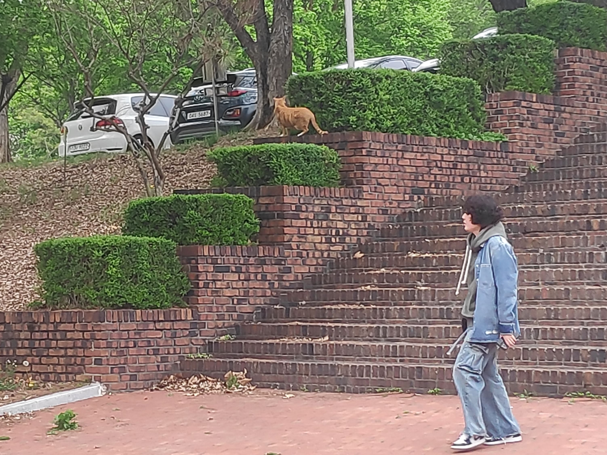
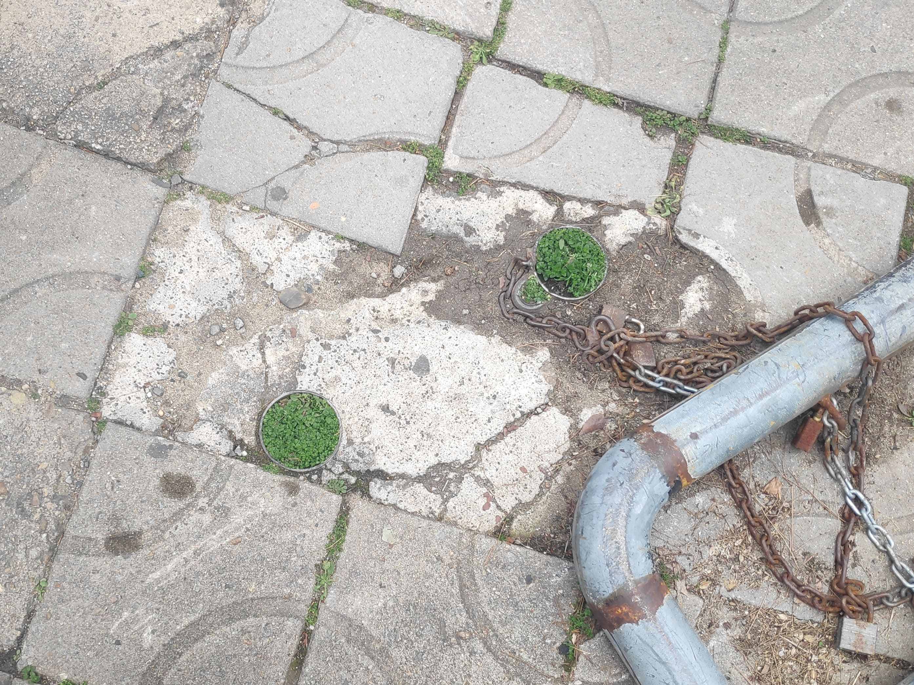
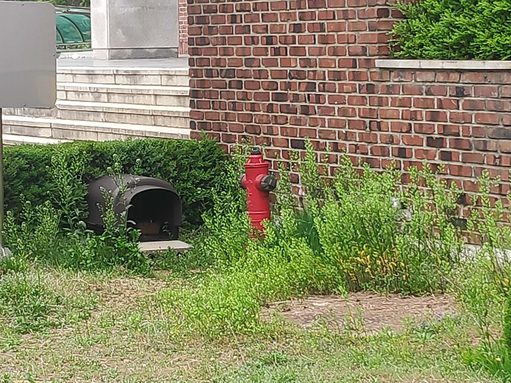
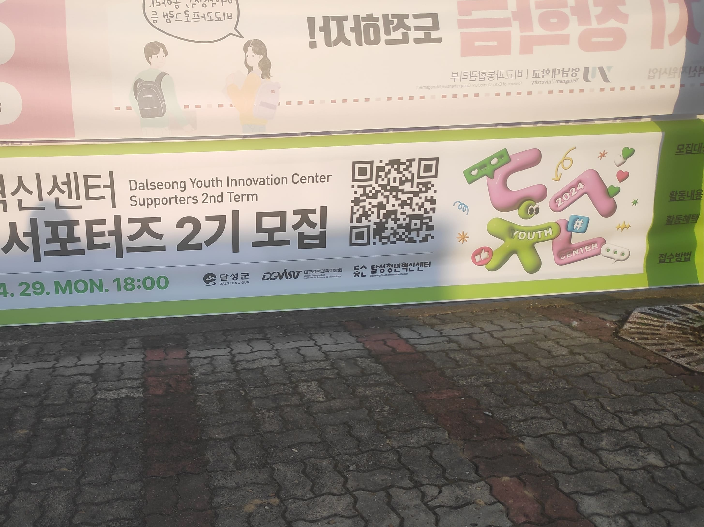
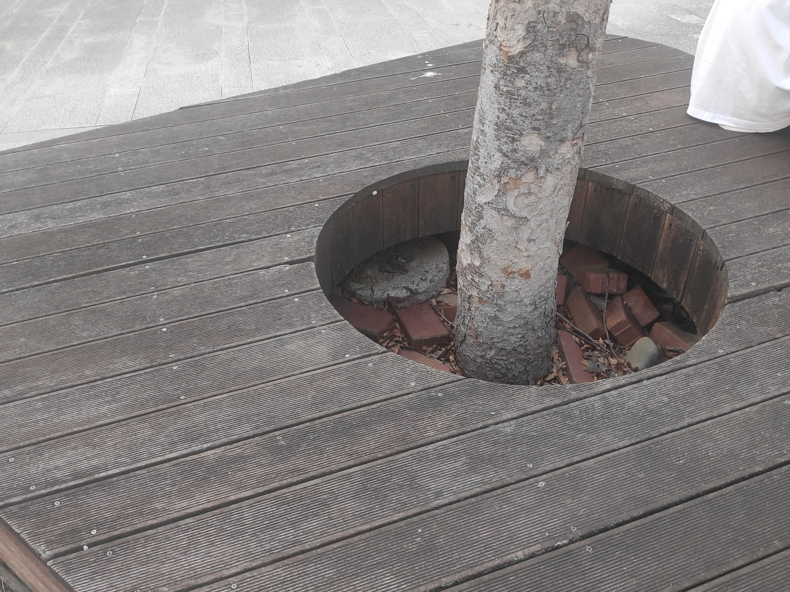
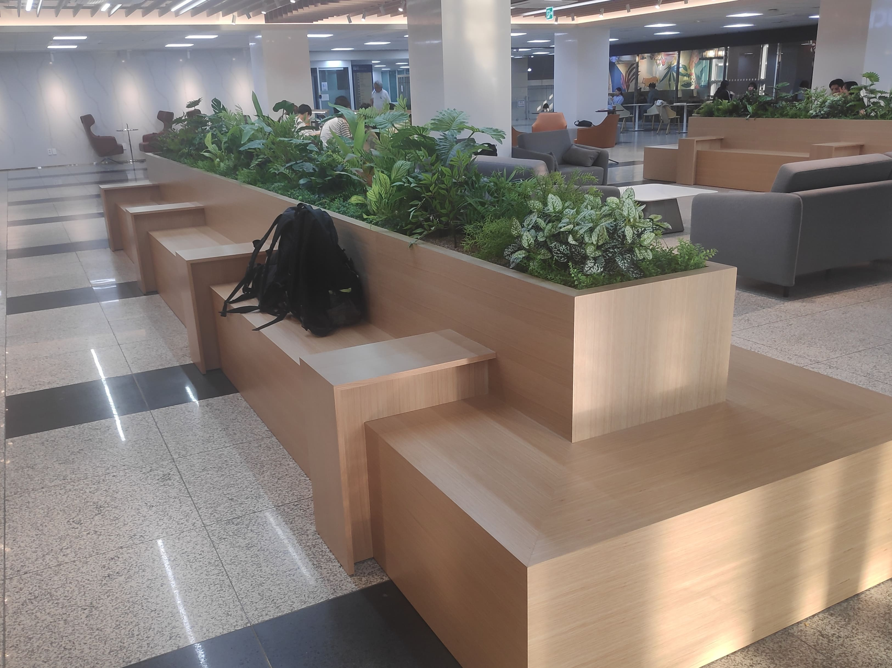
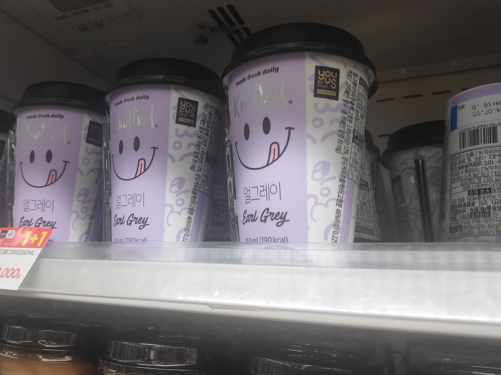

2024.04.08.
계단

디자인관 정문 앞 계단이다. 무심코 지나가려다 독특한 모양의 풀이 보였다. 계단 단층의 높이 변화에 맞게 직육면체 형태로 풀들이 정돈되었다. 참 깔끔하고 귀여운 디자인이다. 최근 들어 정원 조형물에 관심이 많다. 그래서 이런 조형물을 보면 더욱 지나칠 수 없다. 문득 영남대학교의 건물 디자인은 어떤 디자이너가 맡았는지 궁금해졌다. 또, 풀은 누가 깎아주는 걸까?
구멍

디자인관과 미술관 사이의 길바닥이다. 봉이 뽑혀나간 자리에 파릇파릇한 풀이 자라있었다. 신기한 조화였다. 추측해 보자면 비가 왔던 날, 그 구멍에 물이 차면서 식물이 자라게 되었을 것이다. 인조적이지 않고 우연히 생긴 풀이 더 독특하게 보이도록 만들었다. 거리 예술 디자인들을 찾아보면 이런 무채색의 도로 구조물 사이에 푸른 자연물을 배치하는 경우가 많았다.
소화전

디자인관 게시판 옆 벽면이다. 듬성듬성 난 풀들 사이의 소화전 색깔이 참 강렬해서 눈에 띄었다. 미술 학원을 가면 항상 초반부에 배우는 것이 보색 관계다. 빨강의 보색은 초록이다. 그래서 풀 사이의 소화전을 보았을 때 더욱 강렬하고 극명한 인상을 느낄 수 있었다. 다른 예시로 의사의 수술복이 초록 계열의 색상인 이유도 쉽게 튀는 피가 붉은 색상이기 때문이다. 훌륭한 디자인을 만들기 위해선 색상에 민감해야 한다.
2024.04.12.
현수막

도서관 근처에 걸린 현수막이다. 혁신 센터 서포터즈 모집과 관련된 내용이다. 내 시선을 이끈 건 우측의 입체적인 폰트다. 둥글고 풍선과 비슷한 이 폰트 디자인이 청년이라는 키워드와 잘 어울리고 귀엽다. 각 자음의 우측과 하단에 그림자가 들어가서 더욱 입체적인 느낌을 준다. 각 자음 안에 작게 들어간 폰트들도 앙증맞다. 글자 안의 글자라니, 좋은 발상인 것 같다.
나무 조형물

도서관 앞의 목재 조형물이다. 사람들이 주로 벤치처럼 사용한다. 독특한 점은 중앙에 원형의 구멍이 있고 그 안에서 나무가 자라있다. 디자인적으로도 귀엽다. 여름에는 나무의 그림자가 조형물 위로 그늘을 만들어서 휴식하기에도 적절하다. 디자인은 시각적인 부분도 좋지만 이렇게 실용성도 채울 수 있다면 더할 나위 없이 훌륭하다. 특히 휴식 공간 디자인들은 실용성도 매우 중요하게 생각한다.
도서관

중앙 도서관 내부의 휴식 공간이다. 여러 사람이 앉을 수 있는 벤치의 디자인이 새롭게 느껴졌다. 건물이란 인조적인 공간인데 자연적인 식물과의 조화가 특이했다. 요즘 갈수록 이런 자연 친화적인 디자인이 늘어간다. 벤치의 색상이 밝은 갈색이라 촌스럽지 않고 잘 어울렸다. 물론 인조 식물이겠지만 이런 디자인의 효과로 답답하지 않고 탁 트이는 기분이 들었다.
음료

교내 편의점의 음료 진열대다. 노티드의 로고가 익숙해 음료도 자연스럽게 눈에 들어왔다. 브랜드의 로고는 쉽게 알아볼 수 있고 기억하기 좋도록 단순해야 효율적이다. 그런 면에서 이 로고는 잘 디자인된 것 같다. 우측 면의 컨페티 모양 아이콘들이 그려진 것도 로고와 잘 어울리는 아기자기한 느낌이다. 전체적으로 단순한 색상만을 사용하여 로고가 더 인상 깊다.